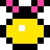
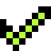

El juego de siempre
- Te premia por quedarte
- Te llama de vuelta con notificaciones
- La pantalla es el mundo
RETO TOUCH GRASS · HACKTOBERFEST 2026
EcoQuest convierte una caminata en una expedición de ~20 minutos: tres misiones, unas cuantas fotos y una insignia al final. Una IA de pesos abiertos interpreta tus hallazgos; tú pones los pasos.
Sin cuentaSin ubicación precisaCódigo abierto
The Real World Is Your Playground.
EL PROBLEMA
Feeds infinitos, rachas, notificaciones: muchas experiencias digitales te premian por seguir mirando. EcoQuest juega al revés: usa el teléfono solo para arrancar la aventura y la IA para interpretar lo que encuentras, no para retenerte.
CÓMO SE JUEGA
La app aparece solo al principio, cuando encuentras algo y al final. Lo demás pasa con el teléfono en la bolsa.
Abre EcoQuest, revisa tus 3 misiones y lee el aviso de seguridad. Sin registro.
Camina, mira, escucha. Sácalo solo cuando encuentres algo.
Una foto por misión. La IA abierta te dice si se parece a lo que buscabas… o si no está segura.

Ve tu resumen de hallazgos y el tiempo en sesión. Expedición completada.

Sin feeds, sin rachas, sin notificaciones que te llamen de vuelta.EXPEDICIÓN PILOTO · MUNDO 1
Parque Tomás Garrido Canabal, Villahermosa, Tabasco. ~20 minutos · 3 misiones · 1 insignia.
Las misiones pueden ajustarse tras las pruebas en el parque: si la IA no las valida bien, las cambiamos.
Busca una hoja que te sorprenda por su tamaño. Tómale una foto; no la arranques.
Encuentra una flor y fotografíala de cerca, sin cortarla.
Busca raíces que salgan del suelo y captúralas desde el sendero.
IA ABIERTA · SIGLIP2
EcoQuest usa SigLIP2, un modelo de pesos abiertos que compara tu foto con descripciones de texto. No adivina especies ni finge certezas: si no está segura, te lo dice.
Se reduce en tu teléfono antes de enviarse.
Mide qué tanto se parece a la categoría de la misión («hoja», «flor visible», «tronco/raíces») frente a otras categorías de contraste.
Si el parecido supera el umbral de la misión, cuenta como coincidencia. Si no, te ofrece opciones.
«Parece una hoja. ¡Misión completada!» Es tentativa: significa se parece, no está verificado.
«No estamos seguros. ¿Otra foto?» La IA no encontró suficiente parecido.
«No pudimos analizar la foto. Inténtalo de nuevo.» Falló la red, el servicio o la imagen.
Tú marcas la misión y queda etiquetada así en tu progreso, resumen e insignia. Sin trampas escondidas.
Modelo de referencia: google/siglip2-base-patch16-256 (variante final [Por definir]). Licencia de los pesos: [Por definir]. Inferencia en servidor con Python + Transformers; proveedor de hospedaje [Por definir]. Pesos abiertos no significa offline: por ahora necesitas conexión.
REGLAS DE LA PARTIDA
Pocas pantallas, casi nada que escribir y una acción principal por pantalla. La app es el menú de pausa; el juego está afuera.
Una foto cuando encuentras algo, no una ráfaga. Mira primero; dispara después.
No toques fauna, no recolectes ni arranques, quédate en senderos y zonas permitidas, y lejos del borde del agua.
Sin cuenta, sin correo, sin ubicación precisa. Tu progreso vive en tu teléfono y puedes borrar tus fotos cuando quieras.
Hecho para leerse bajo el sol de Tabasco: alto contraste, letras grandes, botones grandes.
HECHO EN VILLAHERMOSA
EcoQuest nace en Villahermosa, Tabasco, y su primera expedición vive en el Parque Tomás Garrido Canabal. Calor, humedad y lluvias forman parte del nivel, por eso las misiones son cortas y flexibles.
Antes de jugar, respeta el reglamento y horarios del parque.
Próximamente: la bitácora de nuestra primera salida, con aciertos y errores.
Evidencia de la salida real: [Por definir]
BAJO EL CAPÓ
La IA no es un adorno: sin SigLIP2 no hay validación de misiones. Y ninguna pieza decisiva depende de un modelo propietario.
Stack provisional; puede cambiar durante el desarrollo. Plataforma final (web móvil / PWA): [Por definir].
OPEN SOURCE
EcoQuest es código abierto. Si te late la idea de una IA que te saca a pasear, hay misiones secundarias para ti.
Propón misiones visuales y ayúdanos a probarlas con fotos reales.
Comparte casos difíciles: fotos ambiguas, negativas o con mala luz. Así afinamos umbrales.
Mejora contraste, lectura en exterior y traducciones.
Licencia del código: [Por definir] · Créditos y licencias del modelo y dependencias en el README.
Fotos de prueba: solo con derechos de uso claros y sin personas identificables.
PRÓXIMOS NIVELES
Ideas a explorar después del piloto, sin fechas ni promesas. Cada una entra solo si funciona en pruebas reales.
Expedición piloto en Villahermosa.
Nuevas expediciones en otros espacios.
Solo las que la IA valide bien.
Tus hallazgos, guardados en tu teléfono.
Un modelo multimodal abierto que describa tus hallazgos.
Si los teléfonos lo aguantan.
Con datos abiertos y verificados.
¿Tienes una idea de nivel? Propónla en el repo.
FAQ
google/siglip2-base-patch16-256). Variante final y licencia de los pesos: [Por definir]; todo queda documentado en el README.PRESIONA START
Tres misiones, ~20 minutos y un parque esperándote. Lo único que tienes que hacer después es guardar el teléfono.
Sin cuentaSin ubicación precisaFotos borrables
The Real World Is Your Playground.